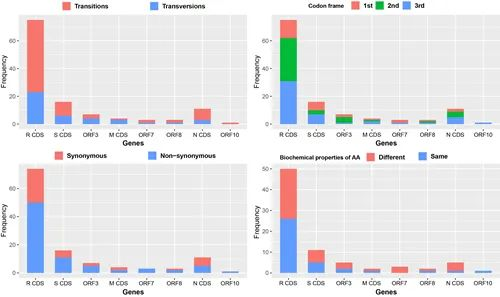

华南海鲜市场不是病毒发源地！中科院团队基因追踪“零号病人”再进一步
原文链接 备份链接 华南海鲜市场的新冠病毒来自其他地方，这个结论有了基于基因序列的证据。 中国科学院西双版纳热带植物园的研究人员在分析 93 个新型冠状病毒样本基因组数据后发现，基于 120 个变异位点得到 58 种单倍型（基因类型）中， …
中国科学院西双版纳热带植物园网站
2019年12月在湖北武汉爆发了一种新型冠状病毒（SARS-CoV-2）所致的肺炎（现称COVID-19），新型冠状病毒爆发已两个多月，确定华南海鲜市场是不是唯一的发源地，对于寻找病毒的来源，以及确定中间宿主，对疫情的控制和避免再次爆发具有至关重要的意义。中国科学院西双版纳热带植物园联合华南农业大学和北京脑科中心的科研人员一起收集了全世界各领域共享到GISAID EpiFluTM数据库中覆盖了四大洲12个国家的93个新型冠状病毒样本的基因组数据（截止2月12日），通过全基因组数据解析，追溯传染源及扩散路径。研究发现，收到的93个样本包含58种单倍型，可以归纳为五组，包括3个古老超级传播者单倍型（H1,H3和H13）和2个新的超级传播者单倍型（H56和mv2）；华南海鲜市场的新型冠状病毒是从其他地方传入进来，在市场中发生快速传播蔓延到市场之外；同时，现扩散的病例至少来自于3个途经。新型冠状病毒在2月12日之前发生过2次明显的种群扩张（分别是12月8日和1月6日）。
华南海鲜市场的新型冠状病毒是从其他地方传入的
基于120个变异位点得到58种单倍型（基因类型），单倍型演化关系显示，单倍型H13和H38是比较“古老的”单倍型，通过一个中间载体（mv1，可能是一个祖先单倍型，可能是来自中间宿主或者“零号病人”）与蝙蝠冠状病毒RaTG13关联，并通过单倍型H3衍生出了单倍型H1。与华南海鲜市场有关联的患者样品单倍型都是H1及其衍生的单倍型H2，H8-H12，而一份武汉样品单倍型H3与华南海鲜市场无关。可见，华南海鲜市场的新型冠状病毒是从其他地方传入进来，在市场中发生快速传播蔓延到市场之外。另外，根据病患发病时间记录和种群扩张时间推断，也印证了华南海鲜市场不是病毒发源地的推论。
对“古老的”单倍型H13和H38的病毒样品溯源发现分别是来自深圳的病患（广东首例）和美国华盛顿州的病患（美国首例）。他们的旅行记录表明应该都是2019年12月底至2020年1月初在武汉探亲期间被感染的。现有武汉样本中没有检测到H13和H38单倍型，可能是因为现有样品主要采自几家定点医院，而且样品采集时间局限于2019年12月24日和2020年1月5日。如果能在武汉其他医院早期的病患检测到这两种单倍型，将对于寻找病毒来源非常有帮助。
新型冠状病毒在2月12日之前发生过2次明显的种群扩张
根据新型冠状病毒基因组数据推算1月之前的种群扩张发生时间是12月8日，该结果暗示病毒可能在12月初，甚至11月下旬即已经开始有人际传播，随后在华南海鲜市场加快了人际传播（图2）。研究推算2月份之前的种群扩张时间在1月6日，这个可能与元旦假期有关联。需要指出，这一天国家疾控中心发布了2级应急响应。当时的预警起到了一些警示作用，公众活动和出行都有所减少。如果当时的警示能引起大众更广泛的重视，那么1月份中下旬向全国和全球蔓延的病例会有所降低。研究人员进一步确认我国其他9个省区和其他11个国家的感染病例基本都是从武汉直接或者间接输入而来。
现扩散的病例至少来自于3个途径
为了能够细分来源，研究人员将58种单倍型分成了五组，采用标准是3个中心（古老超级传播者）单倍型（H1,H3和H13）和2个新的超级传播者单倍型（H56和mv2）。以此鉴别出广东的病毒可能有三个来源，重庆和台湾的病毒有两个来源。其中，广东深圳一家人在早期就通过人传人进行了传播。有较多样本的澳大利亚、法国、日本和美国，他们的患者感染源至少有两个，尤其是美国包括了五个来源。非常值得关注的是H56这个超级传播者单倍型，它同时是澳大利亚、法国和美国，以及我国台湾患者的传染源。其他国家患者因为样品比较少，大多数的来源比较单一，他们除了是武汉旅游输入或在武汉感染外，有一些人可能是在广东、新加坡等地被感染。
新型冠状病毒基因组尚未发生重组事件
研究人员发现新型冠状病毒基因组没有发生重组事件，93个基因组之间有120核苷酸发生了突变（0.41%序列长度），并均匀分散在10个编码区（χ2=1.958, df=9, P=0.99）。120个突变的核苷酸关联了119个氨基酸密码子，其中79个密码子 (65.83%)改变了氨基酸类型，并有42个(53.17%)氨基酸理化性质都被改变（图3）。这些氨基酸类型以及理化性质改变是否会影响新型冠状病毒的活性暂不清楚，需要其他蛋白组学和结构生物学方面的专业人士进行验证。本研究是版纳植物园综合保护中心生物多样性研究组的科研人员利用其在系统与演化领域的专长开展的，本研究提到单倍型演化关系分析方法可以结合到传染病学研究中，对于寻找传染源，以及精确的传播和扩散方向能提供非常重要的信息。
相关研究结果已提交到中国科学院科技论文预发布平台http://www.chinaxiv.org/abs/202002.00033，可供疾控防疫相关部门参考，并接受专家学者的交流和讨论。

图2. 新型冠状病毒单倍型的样品采集时间情况。红色圈的样品是确认与华南海鲜市场有关；蓝色圈的样本确认与海鲜市场无关。

图3. 120个变异位点在8个编码区的分布情况。统计类型包括替换或替代（左上角），密码子位置1-3（右上角），同义突变或非同义突变（左下角），和氨基酸性质（右下角）。
戳这里进入
“全国新型冠状病毒感染病例实时地图”↓↓↓
本期编辑 邢潭
推荐阅读


原文链接 备份链接 华南海鲜市场的新冠病毒来自其他地方，这个结论有了基于基因序列的证据。 中国科学院西双版纳热带植物园的研究人员在分析 93 个新型冠状病毒样本基因组数据后发现，基于 120 个变异位点得到 58 种单倍型（基因类型）中， …
原文链接 备份链接 图片来源：新华社 作者：DeepTech 孙滔 本文授权转载自DeepTech（ID：deeptechchina） “ 华南海鲜市场的新冠病毒来自其他地方，这个结论有了基于基因序列的证据。 ” 华南海鲜市场的新冠病毒来 …
原文链接 备份链接 02.02.2020本文字数：3224，阅读时长大约5.5分钟 导读：病毒传播路径的信息，为何在病毒全面开花扩散之后，源源不断地发表在论文上。 作者 | 第一财经 马晓华 从新型冠状病毒开始踏足武汉，到蔓延至全国甚至 …
原文链接 备份链接 【财新网】（记者 杜偲偲）研究者试图根据新冠病毒基因演化情况了解病毒扩散路径。2月21日，中国科学院西双版纳热带植物园、华南农大、中国脑科学研究所等机构的研究人员发表预印文章称，武汉华南海鲜市场的新冠病毒是从其它地方传 …
原文链接 备份链接 优抚医院距离华南海鲜市场200米，2019年12月接诊了3名“不明原因肺炎“患者，包括后来转诊至金银潭医院的第一例确诊患者。 疫情伊始，各级疾控部门做的流行病学调查中，小医院的医生没有被重视，这很可能导致新冠肺炎早 …